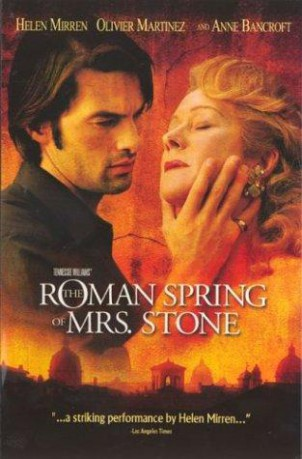

#8583 Mrs. Stone und ihr römischer Frühling
Alternativ: The Roman Spring of Mrs. Stone
 
 IMDB-Wertung: 6.5 / 10
IMDB-Wertung: 6.5 / 10  Metascore: 0
Metascore: 0 
A failing star is faced with a lifestyle change when her rich husband suddenly dies while they are en route to Italy. She then sets off in a series of flings with gigolos found for her by an aging contessa. Each contact spirals further out of control until she becomes obsessed with one young man, who initially treats her well, but then with disdain.
Jahr: 2003
Dauer: 114 Minuten
FSK: 12
Land: USA Studio: Showtime NetworksTonspuren: DTS - ,
Untertitel: Deutsch,
Auflösung: 1080p (1920x1080) Größe: 8140 MB
Genre: Drama, Liebe
Regisseur: Robert Allan Ackerman
Drehbuch: Michael Larnell
Soundtrack: John Altman
Darsteller:
 Helen Mirren als Karen Stone
Helen Mirren als Karen Stone Olivier Martinez als Paolo di Lio
Olivier Martinez als Paolo di Lio Anne Bancroft als Contessa
Anne Bancroft als Contessa Rodrigo Santoro als Young Man
Rodrigo Santoro als Young Man Brian Dennehy als Tom Stone
Brian Dennehy als Tom Stone Roger Allam als Christopher
Roger Allam als Christopher- Victor Alfieri als Lorenzo
 Suzanne Bertish als Julia
Suzanne Bertish als Julia- Jane Bertish als Karen's Secretary
- Tara Lynne O'Neill als Angel Hunter
- Salvatore Lazzaro als Barber
- Sara James als Hairdresser
- Riccardo Sardonè als Marco
- Dona Granata als Mama Pepisco
- Aldo Signoretti als Papa Pepisco
- Ángel Alonso als Guido
- Frank Crudele als Peppo
- Genevieve Mackenzie als Maid
- Jack Lynch als Reporter
- Morgan O'Sullivan als Reporter
- Rebecca Smith als Stewardess
Datei: X:\2003(G-M)\Mrs. Stone und ihr römischer Frühling (2003, FSK12, 1920x1080).mkv seit 22.03.2018
Festplatte: HD 2003-2004-2005(A-F)
 Es gibt insgesamt 33 Filme in der Gruppe '2003(G-M)'
Es gibt insgesamt 33 Filme in der Gruppe '2003(G-M)'